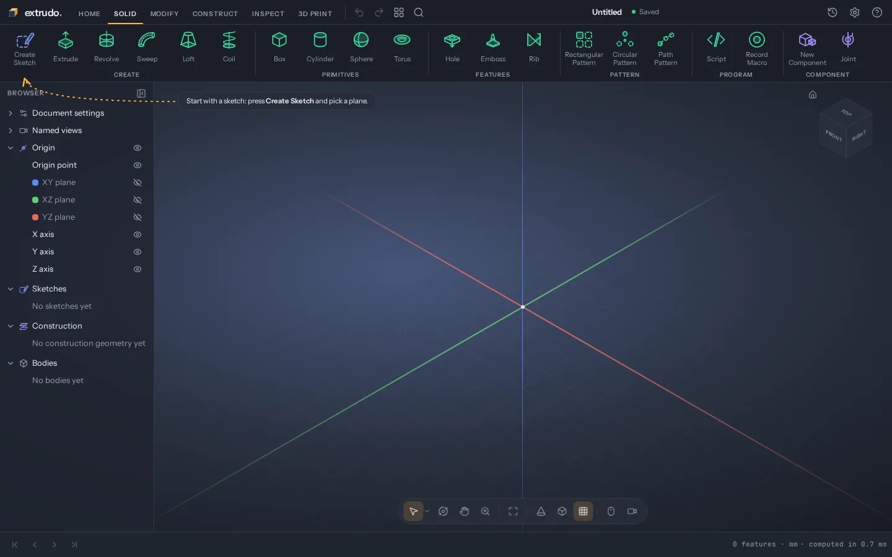
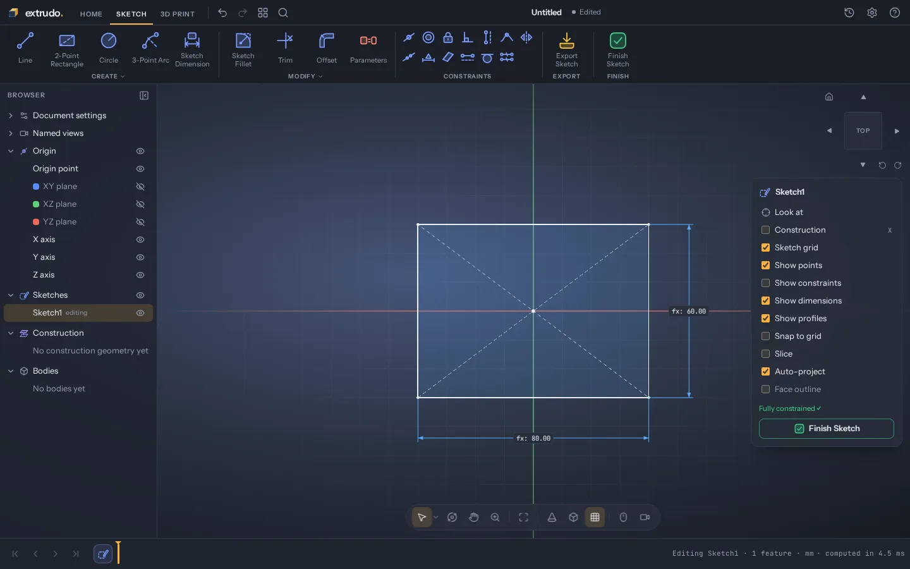
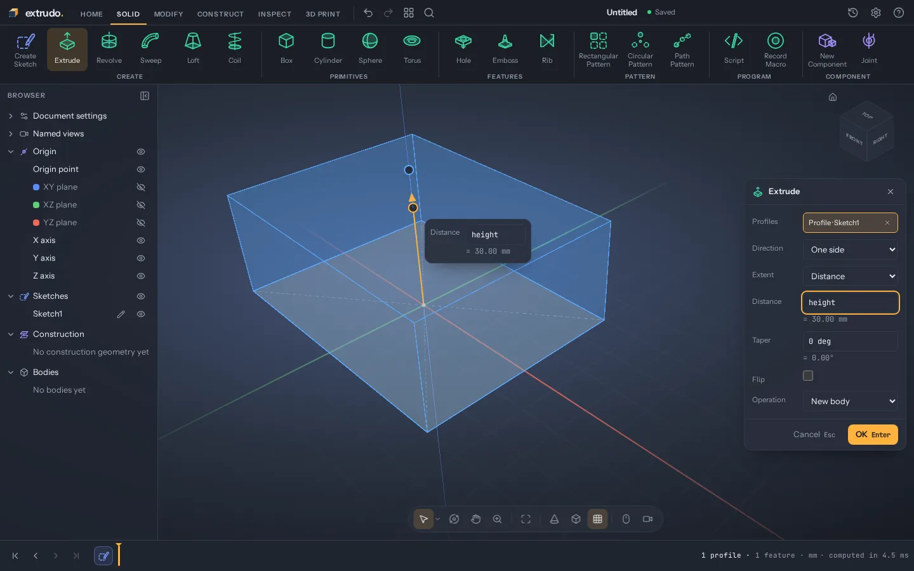
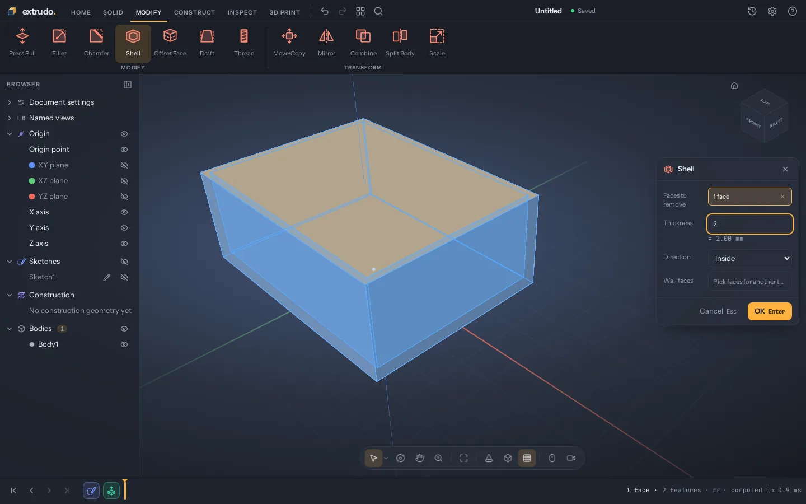
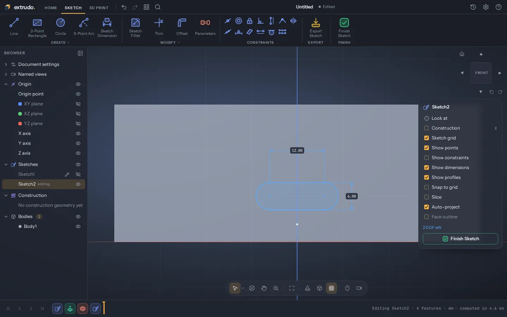
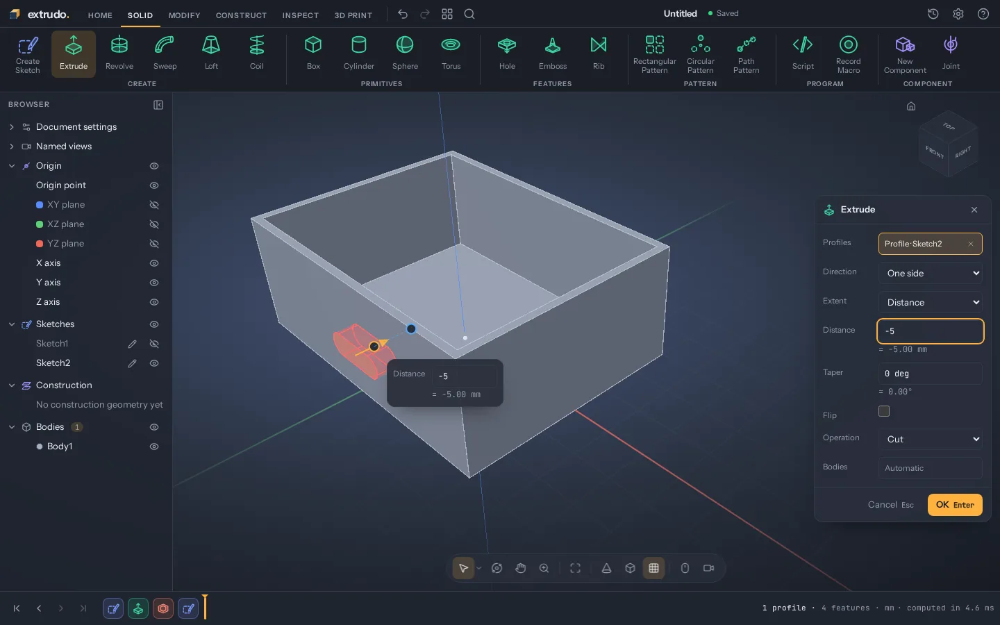
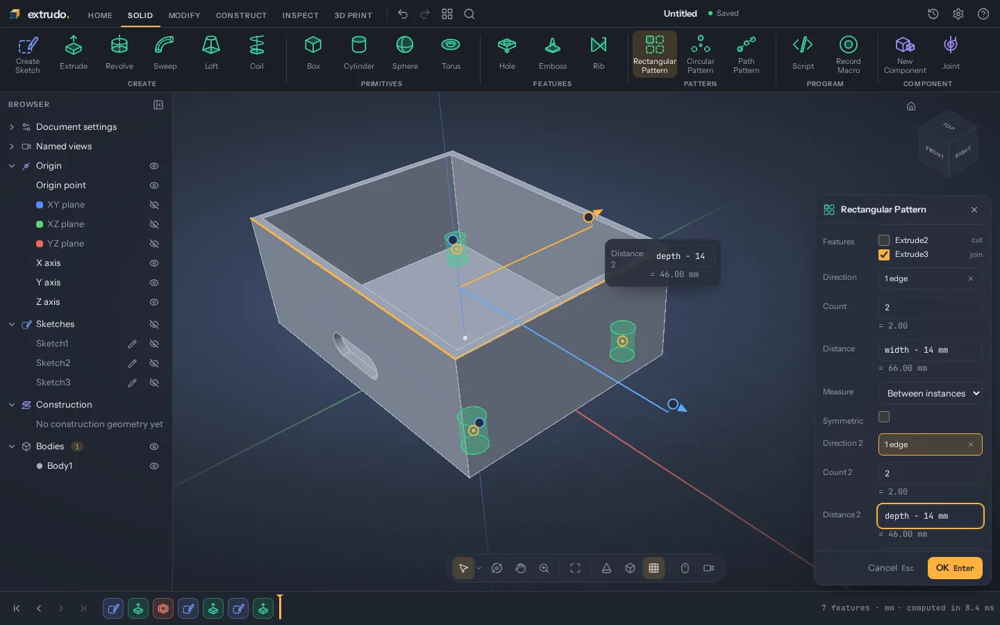
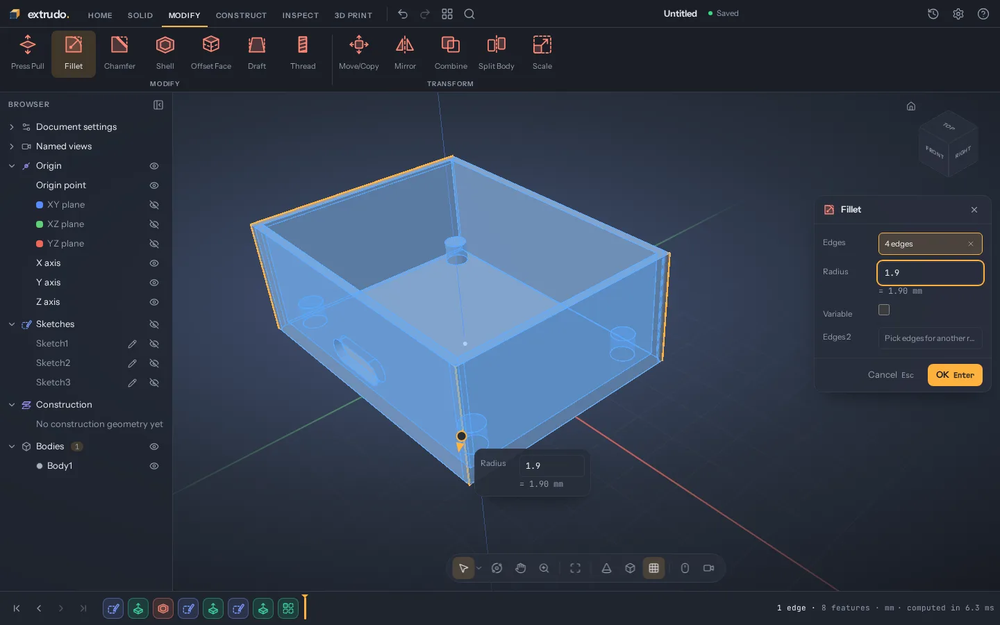
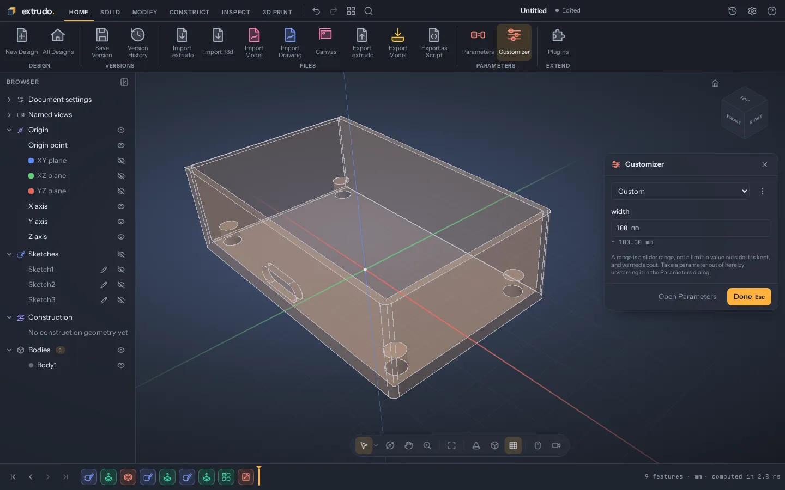
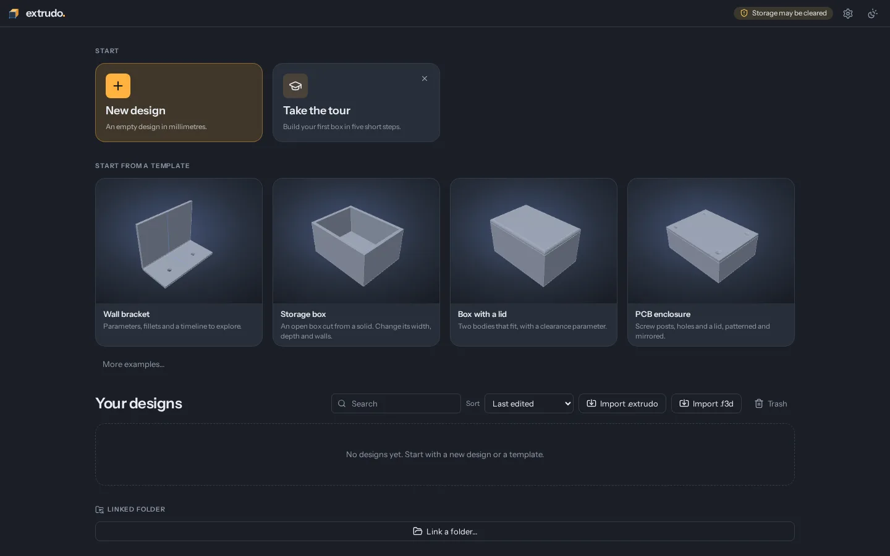

Parametric CAD for 3D printing, in your browser.
Available The desktop app for Linux, macOS and Windows
Sketch a profile, pull it into a solid, round the edges, and change one number to watch the whole part follow. Free and open source. Nothing to install, no account.
Want the newest features before they're released? Try the latest build. It changes daily and can break.
Customizer
9 steps
A box for a circuit board, step by step
Scroll through a real session: every picture is the app itself.
-

Start with an empty design
Press New design. There's nothing to install and no account: the design is saved in your browser.
-

Sketch the outline
Draw a rectangle from its centre and dimension it with two parameters,
widthanddepth, so you can change them later. -

Pull it into a solid
Extrude the rectangle
heightup. The preview shows the block before you press OK. -

Hollow it out
Shell the block with 2 mm walls and the top face removed: that's the tray your board sits in.
-

Sketch on a wall
Start a sketch right on the front face and draw a slot where the USB connector goes.
-

Cut the opening
Extrude the slot into the wall as a cut, just deep enough to go through it.
-

Add screw posts
Extrude one post from the floor, then repeat it to the four corners with a pattern spaced from
widthanddepth. -

Round the corners
Fillet the four outer edges, so the box is nicer to hold and its corners print cleanly.
-

Change one number
Set
widthto 100 mm. The outline, the walls, the slot and the posts all follow: that's what parametric means.
Features
What it does
Constrained sketches, exact solids, parameters everywhere and checks for printing, plus scripts, plugins and the file formats you already use.
Get started
Start from a template, or take the tour
A five-step tour walks you through your first part: a sketch, a dimension, an extrude and a fillet. Or open one of the templates and change its parameters.

Is Extrudo free?
Yes. Extrudo is free and open source under the GPL-3.0. There is no paid version and no account.
Do I need to install anything?
No. Open it in a current Chrome, Edge, Firefox or Safari and start designing. To give it a window of its own, install it from the browser's menu.
Is there a desktop app?
Yes, for Linux, Windows and macOS. It is the same Extrudo in a window of its own: it
opens .extrudo files from your file manager and sends models straight
to your slicer. Download and install it.
Where are my designs stored?
In your browser's own storage, on your computer. Nothing is uploaded, and the app
has no analytics. To keep a copy or move a design to another machine, use Home ›
Export Design, which writes an .extrudo file. In Chrome and Edge you can
also link a folder on your disk, and the desktop app saves to files.
Are my designs shared with others?
No. Extrudo has no server that keeps designs, so nothing you make is uploaded or
seen by anyone else. A design only leaves your computer when you send it yourself:
export it with Home › Export Design and share the .extrudo file, or
export a 3MF, STL or STEP file of the model.
Does it work offline?
Yes. After the first visit the app is kept in your browser and opens without a
connection. The one exception is the OpenSCAD compiler, which is downloaded the
first time you import a .scad file.
Can I open files from other CAD programs?
STEP files come in as exact solid bodies, STL, 3MF and OBJ files as mesh bodies, and
OpenSCAD files are compiled in your browser. The latest build also reads
.f3d files. The features page has
the full table of formats.
Which slicers does it work with?
Any slicer that opens 3MF or STL. A 3MF file keeps your bodies' names, colours and units. The desktop app can also open the model straight in PrusaSlicer, OrcaSlicer, Bambu Studio or Cura.
Can I automate a design?
Yes. A Script feature runs TypeScript inside the design, a recorded macro gives you the code for what you just did, and plugins add features of their own. The API docs cover all three.
Is it ready for real work?
It is young and changes quickly. Designs saved by an older version keep opening in newer ones, and the file format is documented. Still, export a copy of the designs that matter to you.
How do I report a problem or ask for a feature?
Open an issue on GitHub, or write to __CONTACT_EMAIL__. To help with the code, start with CONTRIBUTING.md.